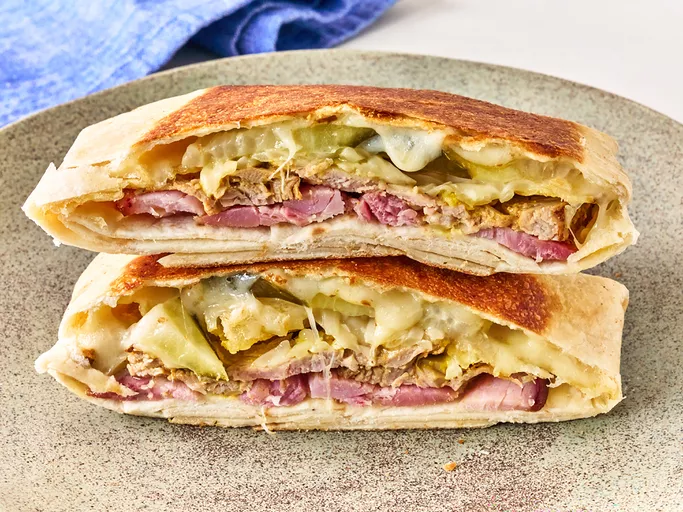

Cuban Crunchwrap
Total time: 10 mins
- Prep time: 5 mins
- Cook time: 5 mins

Description
Try this Cuban crunchwrap with ham, cheese, pork, pickles and, yes, potato chips. A quick and easy lunch for one. It's about quality of life, not quantity.
Ingredients
- 1 extra large flour tortilla (12 inches or larger)
- 2 ounces sliced ham
- 2 ounces cooked pork
- 2 teaspoons mustard
- 1/2 cup kettle potato chips
- 1/4 cup shredded Swiss cheese
- 4 dill pickle slices
- 1 tablespoon butter
Directions
- Place tortilla down on a work surface.
- Add ham and pork in thin layers in the center of the tortilla and drizzle with mustard.
- Top with a layer of chips, 1/2 of the Swiss cheese, pickles, and remaining cheese.
- Fold one side of the tortilla over the filling and continue to make 4 additional folds working clockwise to fold the tortilla completely over the fillings.
- Heat butter in a skillet over medium heat.
- Place crunchwrap, seam side down, in the skillet and cook until well toasted.
- Flip and cook until toasted and warmed throughout.
Serve immediately.